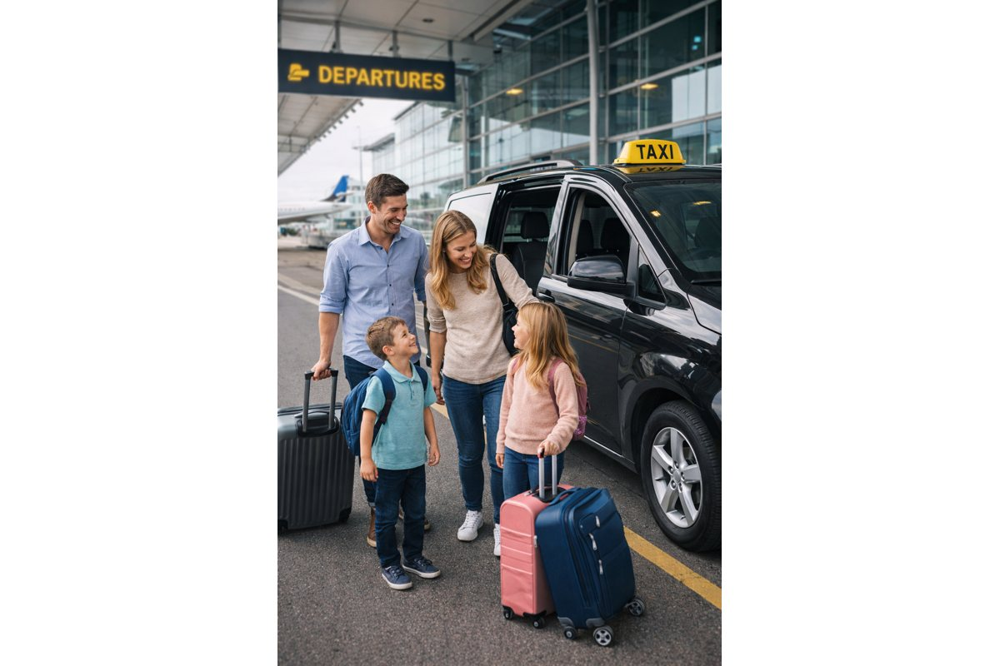

Taxi local
Sorel-Tracy et les environs, jour et nuit.

Taxi local à Sorel-Tracy, transport longue distance et transferts vers l'aéroport Montréal-Trudeau.
Sorel-Tracy et les environs, jour et nuit.
Départs et arrivées avec espace pour vos bagages.
Montréal, Longueuil, Trois-Rivières et plus.
Seulement les informations nécessaires. Vous pourrez tout vérifier avant l'envoi.
Assurez-vous que les informations sont correctes avant l'envoi.
Un email de confirmation vous sera envoyé.
Nous avons bien reçu votre demande.
Réservez à toute heure.
Une prise en charge professionnelle.
Selon vos passagers et bagages.
Un trajet planifié pour partir ou rentrer sans stress. Indiquez votre numéro de vol et nous aurons les informations nécessaires à votre réservation.
Réserver un transfert